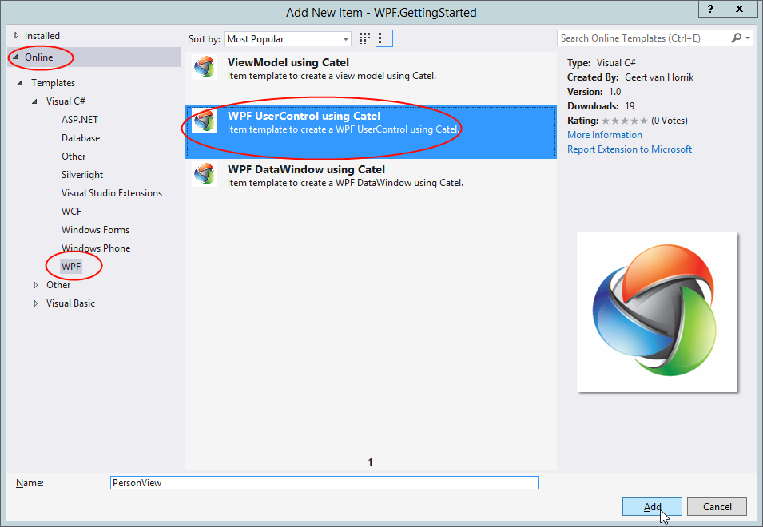

In this step we will create the views for the application. There are several views that will be created and both user controls and windows will be handled in this part of the guide. Catel makes it very easy to create views as user controls with their own view models. In the previous step we already created the view models.
Person view
To create a new view, right-click the Views folder in the solution => Add => New item... => On-line => and search for Catel as you can see in the screen below:

Give the new view the name PersonView. The view will be added to the Views folder.
Catel will automatically link the PersonViewModel and PersonView together by naming convention
Now we only need to modify the view itself, the code-behind can stay untouched. Since xaml isn't very interesting for this guide, simply copy/paste the xaml below and set it as content of the view:
<Grid>
<Grid.RowDefinitions>
<RowDefinition Height="Auto" />
<RowDefinition Height="Auto" />
</Grid.RowDefinitions>
<Grid.ColumnDefinitions>
<ColumnDefinition Width="Auto" />
<ColumnDefinition Width="*" />
</Grid.ColumnDefinitions>
<Label Grid.Row="0" Grid.Column="0" Content="First name" />
<Label Grid.Row="0" Grid.Column="1" Content="{Binding FirstName}" />
<Label Grid.Row="1" Grid.Column="0" Content="Last name" />
<Label Grid.Row="1" Grid.Column="1" Content="{Binding LastName}" />
</Grid>
Family view
The FamilyView must be created exactly the same way as the PersonView. Use the following xaml as content:
<Grid>
<Grid.RowDefinitions>
<RowDefinition Height="Auto" />
<RowDefinition Height="Auto" />
<RowDefinition Height="Auto" />
</Grid.RowDefinitions>
<Grid.ColumnDefinitions>
<ColumnDefinition Width="Auto" />
<ColumnDefinition Width="*" />
</Grid.ColumnDefinitions>
<Label Grid.Row="0" Grid.Column="0" Content="Family name" />
<Label Grid.Row="0" Grid.Column="1" Content="{Binding FamilyName}" />
<Label Grid.Row="1" Grid.ColumnSpan="2" Content="Persons" />
<ItemsControl Grid.Row="2" Grid.ColumnSpan="2" ItemsSource="{Binding Persons}">
<ItemsControl.ItemTemplate>
<DataTemplate>
<views:PersonView DataContext="{Binding}" />
</DataTemplate>
</ItemsControl.ItemTemplate>
</ItemsControl>
</Grid>
Since this view uses the PersonView, it must be defined as a namespace at the top of the file:
xmlns:views="clr-namespace:WPF.GettingStarted.Views"
The thing that is important to notice in the FamilyView is how it uses the PersonView and injects the Person models into the PersonView data context.
Up next
[Creating the views (windows)]({{< relref "getting-started/wpf/creating-the-windows.md" >}})